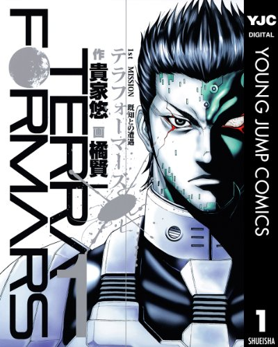

Comic
よつばと！
夏休みの前日、とある町に強烈に元気な女の子「よつば」と、「とーちゃん」親子が引っ越してきた。遠い海の向こうの島から来た不思議な女の子。「よつば」（６歳）に振り回される周りの人達の日常を描いたハートフル？コメディー。（著者：あずま きよひこ）
よつばとは、サザエさんやクレヨンしんちゃんのように、ありふれた日常を描いたマンガだが、主人公・よつばが引き起こすドタバタエピソードには思わず心が和んでしまう。日常を描いたアニメ・マンガ・映画といった作品の中でも個人的に、よつばと！がベスト。

人間が黒い輝きを放つ進化生物に立ち向かうストーリーだが、人はその強敵に立ち向かう為、昆虫や動物といった生物の遺伝子を自身の体に融合させ変態し戦っていく。生物の勉強にもなり、そのバトルスケールの転換と発想は今まで類を見たことがないほど面白い。
テラフォーマーズ
「全く見た事のないものと出会う時、人間は人間ではいられない。」西暦2599年。火星のテラフォーミングが進行し、その地表は一面の苔とある生物で覆われていた。選ばれし15人の若者達は重要任務の遂行を期待され、火星へと向かう。かの地で彼らを待つ、想定外の進化を遂げた生物の正体とは…!?（著者：橘 賢一 / 原著：貴家 悠）
人間が黒い輝きを放つ進化生物に立ち向かうストーリーだが、人はその強敵に立ち向かう為、昆虫や動物といった生物の遺伝子を自身の体に融合させ変態し戦っていく。生物の勉強にもなり、そのバトルスケールの転換と発想は今まで類を見たことがないほど面白い。
僕だけがいない街
毎日を懊悩して暮らす青年漫画家の藤沼。ただ彼には、彼にしか起きない特別な症状を持ち合わせていた。それは…時間が巻き戻るということ! この現象、藤沼にもたらすものは輝く未来? それとも…。（著者：三部 けい）
リバイバルという特殊能力を持つ主人公・藤沼悟はある事件と対峙する為過去に飛ばされる事になるが、現在と過去を結びつける因果関係の展開に目が離せなくなる作品。
寄生獣
「シンイチ……『悪魔』というのを本で調べたが、いちばんそれに近い生物はやはり人間だと思うぞ」他の動物の頭に寄生して神経を支配する寄生生物。高校生・新一と誤って彼の右手に寄生したミギーは互いの命を守るため、人間を食べる他の寄生生物と戦い始めた。（著者：岩明均）
寄生獣は岩明均さんの代表作だと思っているが、生物を食べる人間と人間を食べる寄生生物の対比が何とも印象的。ストーリーが面白いだけでなく、人間とは何か？人権とは何か？生物とは何か？といった哲学的示唆にも富んでいる。是非このマンガだけは一度は読んで欲しいと薦めたくなるほどの名作。
ヒストリエ
舞台は紀元前。奴隷の身分にありながら、豊かな教養と観察眼、判断力を駆使して行動を起こす不思議な青年・エウメネス。あの偉大なる哲学者・アリストテレスの逃亡を助けたりしながら、彼は、「故郷」カルディアの街を目指す。のちにアレキサンダー大王の書記官となるエウメネスの、波乱に満ちた生涯を描いた歴史大作。（著者：岩明均）
手塚治虫文化賞マンガ大賞受賞。古代ギリシャを舞台に、アリストテレス・フィリッポス・アレクサンドロスなど世に名高い人物と一緒に、主人公エウメネスを取り巻く歴史ストーリーが軽快なテンポで展開され目が離せなくなる。世界史の勉強にもなるのでためになる。
七夕の国
地に足がついた本格伝奇SF！ 平凡な大学生、南丸洋二。就活をひかえながら、のんびりと唯一の特技、念力による穴空けに精出す日々。だが、彼の微細な超能力ははるか、時を超え戦国の世の「丸神の里」と結びついていた！ごく普通の大学生の日常から、壮大な歴史伝奇SFへと広がっていく高揚感、スケール感は、ちょっと類を見ない物！（著者：岩明均）
岩明均と言えば、寄生獣・ヒストリエあたりの作品が有名だと思うが（個人的には全部好き）、七夕の国もそれに引けを取らないと思っている。時空を超えて現代と戦国の世を繋ぐ奇抜なストーリー展開は思わず唸ってしまうほど見事で斬新である。
ブラックジャックによろしく
超一流の永禄大学附属病院の研修医・斉藤英二郎、月収わずか３万８千円。同大学医学部卒業から３ヶ月にして、初めて一人で患者を受け持つことになる。研修医・斉藤は理想とかけ離れた日本の医療の矛盾に苦悩しつつも、懸命に日々を送る！（著者：佐藤 秀峰）
主人公の研修医・斉藤英二郎は研修の為、各医局をまわる事になるのだが、生命・倫理・感情といった倫理モラルの中でもがき苦しむ医者の様子が描かれている。ただ、『ブラックジャックによろしく』はすでに16年前の作品なので、少し今とは状況が異なっていると思うが、それでも作品を通してドクターの苦悩と葛藤が十二分伝わってくる。
聲の形
お前なんかに出会わなきゃよかった。もう一度、会いたい。耳の聞こえる少年・石田将也。耳の聞こえない転校生・西宮硝子。ふたりは運命的な出会いをし、将也は硝子をいじめた。やがて、教室の犠牲者は硝子から将也へと移っていった。幾年の時を経て、将也は、もう一度、硝子に会わなければいけないと強く思うようになっていた。（著者：大今 良時）
耳が聞こえない転校生・西宮硝子と耳の聞こえる少年・石田将也との関係を描いた作品。なかなか難しいテーマだが、もし小学生の頃にこのマンガと出会ってれば、もう少しいろいろと違う見方が出来た学生生活を送れたかなあ、と思わせてくれた。
恋は雨上がりのように
橘あきら。17歳。高校2年生。感情表現が少ないクールな彼女が、胸に秘めし恋。その相手はバイト先のファミレス店長。ちょっと寝ぐせがついてて、たまにチャックが開いてて、後頭部には10円ハゲのあるそんな冴えないおじさん。青春の交差点で立ち止まったままの彼女と人生の折り返し地点にさしかかった彼が織りなす小さな恋の物語。（著者：眉月 じゅん）
恋愛感情は人それぞれと言われるが、このマンガはまさにその代表格だと言えるだろう。読み進めると、どうしてアキラが店長を好きになったか何となくわかる気がする。ちなみに『恋は雨上がりのように』のアニメ版OP「ノスタルジックレインフォール」は個人的にかなり好きな曲だ。
高台家の人々
妄想が趣味の地味系女子・平野木絵はニューヨーク支社からやって来た超イケメン社員・高台光正に突然食事に誘われ、驚く。実は光正には、ある特殊な能力が！それは光正の妹と弟にも・・・。（著者：森本 梢子）
平凡な女性・平野がイケメン金持ち・高台光正との恋愛を描くラブ・コメディだが、ストーリーの展開については「花よりだんご」に近いものがあるだろう。ただ、それよりも平野の妄想と高台様の特殊能力が発動してるせいか、もっと面白みのある少女漫画になってる気がする。